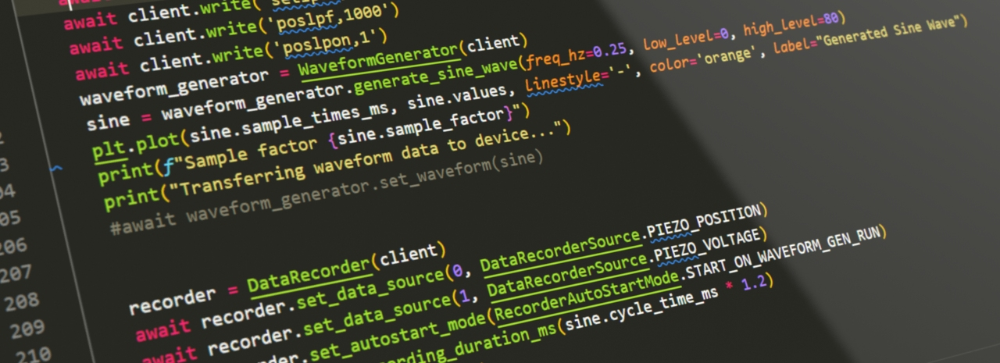

NV200 Python Library
The NV200 Python library provides a Python interface to control the NV200/D Compact Amplifier from piezosystem Jena. It supports communication with the device via both Ethernet and USB interfaces.
Contents:
The NV200 Python library provides a Python interface to control the NV200/D Compact Amplifier from piezosystem Jena. It supports communication with the device via both Ethernet and USB interfaces.
Contents: